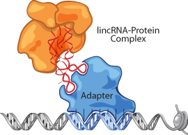
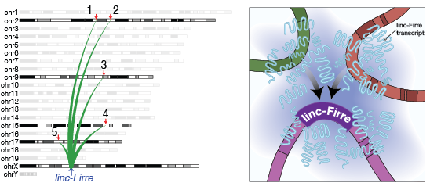

RNA, as a molecule, suffers from a serious publicity shortcoming, stemming in part from its 'middle man' status in the central dogma of biology: DNARNAProtein. And yet, for as long as we have been aware of the roles of messenger RNA in translating the genetic code into proteins, we have known that RNA was capable of so much more. Non-protein coding RNAs have been essential components of numerous core biological processes, including but not limited to ribosome assembly, splicing regulation, and peptide elongation. It is no wonder then, that as the technology to identify and characterize expressed RNAs becomes increasingly more sensitive and available, that we are able to identify new noncoding RNAs with integral roles in many more biological systems. As we continue to unravel the complex mechanisms of gene regulation, cellular differentiation, and cell fate specification, our understanding of the importance of non-coding RNAs continues to expand.
Long intergenic non-coding RNAs (lncRNAs) are a recently described class of regulatory RNA genes with a high degree of cell-type specificity that are likely to contribute to specific cellular identities. LncRNAs have demonstrated roles in differentiation, cell fate specification, apoptosis, body axis patterning, and a growing list of disorders including cancer. We have identified lncRNAs that are induced during various cellular differentiation programs or restricted to subpopulations of cells, and we have begun to demonstrate the physiological relevance of these genes as a class. By establishing a cohort of neuronal lncRNA gene knockout mice, we have determined that indeed several are required for life, and many others have expression and developmental phenotypes within the brain.
My research program is centered around a fundamental biological question: how is the genome properly interpreted to coordinate the diversity of cell types observed during neuronal development? I am focused on the acquisition of specific cellular identities in neural cell development and identifying the molecular determinants responsible for proper brain development. Neuronal development relies on the ability of key cellular components to induce global gene expression changes that instruct cell fate specification, differentiation, and integration into the circuitry of the central nervous system (CNS). This elegant and dynamic process requires complex spatio-temporal choreography of gene regulation and results in the unique specification of a staggering variety of neuron subtypes; each with distinct molecular, morphological, and connectivity features, and a variety of different functions. Despite decades of intense research, we have yet to ascertain exactly how many different types of neurons exist within the central nervous system. A comprehensive characterization of neural cell subtypes and elucidation of the molecular mechanisms by which individual cells acquire their cellular fate will greatly enhance our understanding of neural circuitry, and help to facilitate targeted replacement therapies for traumatic brain injuries and neurodegenerative disorders characterized by loss of discrete neuronal populations.
Our understanding of the non-canonical roles for RNA is rapidly expanding and the unique properties of lncRNAs suggest that they may be instrumental in directing cell fate. My research group is interested in: (1) the identification of lncRNAs that contribute to the number, diversity, and specific activities of cell types within the developing central nervous system, (2) the molecular mechanisms by which lncRNAs regulate gene expression in the context of neuronal differentiation, (3) their coordinate interactions with regulatory protein complexes, and (4) their functional roles in establishment and maintenance of the neuronal phenotype. My recent focus has been on identifying lncRNAs involved in key developmental processes within the brain through characterization of knockout mouse models and isolation of cortical projection neuron subtypes.
High-throughput RNA-sequencing (RNA-Seq) has revolutionized our ability to detect and analyze the regulation of expressed transcripts. To enable broader access to these data, our group is contributing to the development of several tools for the analysis and exploration of differential RNA-Seq data, as well as a systematic lncRNA discovery pipeline which exploits this technological advance. We are continuing to characterize novel lncRNA genes across several mammalian species, cellular subtypes, and disease contexts.
While many lncRNA genes have been identified, the molecular functions and general physiological relevance of this class remains poorly understood. Several groups, including our own, have identified lncRNAs that are induced during various cellular differentiation processes. We have identified a panel of lncRNAs with significantly increased expression during differentiation of preadipocytes into mature fat cells in the mouse. Using an integrated genomics approach, we were able to identify 26 specific lncRNAs with the potential to exert a regulatory effect on adipogenesis. We developed and applied a novel scoring mechanism to quantify the effect of a lncRNA knockdown on the transcriptome and used this metric to identify one particular lncRNA, lnc-Firre, with the strongest effect on adipogenesis. Intriguingly knockdown of this lncRNA effectively abolishes the ability of pre-adipocytes to differentiate into mature adipocytes in culture.
A detailed examination into the molecular mechanisms of lnc-Firre revealed a novel mechanism of genome regulation. Through direct physical interactions with the genome, the lnc-Firre mRNA contributes to the three-dimensional topological organization of the nucleus by recruting inter-chromosomal genomic loci to its site of transcription. Utilizing an exciting new technique called RNA Affinity Purification (RAP) we were able to map with high-confidence at least five regions of the mouse genome that directly interact with the lnc-Firre transcript in mouse embryonic stem cells. Each of these loci is adjacent to a gene with a demonstrated role in energy metabolism. We were able to confirm, using single--molecule fluorescence in situ hybridization (FISH), that each of these genomic loci is co-localized with the lnc-Firre site of transcription in over 75\% of individual cells. This suggests that lnc-Firre may recruit these loci to a `nuclear territory' surrounding its own genomic locus; a novel mechanism for RNA-mediated genome regulation. Functional assays involving the deletion of the lnc-Firre locus, and subsequent rescue, confirmed that the RNA is both required and sufficient to facilitate this toplogical re-organization of the nucleus. Combined with what is already known about the roles for noncoding RNA in epigenetic regulation (e.g. XIST), the ability of lnc-Firre, and potentially other lncRNAs, to contribute to the topological organization of the nucleus suggests that we may have been ignoring a critical layer of genome regulation. We have recently begun to explore this layer in several additional cellular differentiation and specification contexts, including T--cell specification and more recently corticogenesis.
The brain (and the CNS more broadly) constitutes one of the most complex and fast evolving organs in the body. Here, it is likely that complex regulatory mechanisms involving lncRNAs have evolved to build the layered control of gene expression necessary to generate the unparalleled cellular diversity and complex function of this organ. Many lncRNAs have exquisitely regulated spatio-temporal expression patterns within substructures of the brain, including the developing cortex. To confirm a role for lncRNAs in neuronal specification, we are establishing genetic lncRNA models and employing single-cell RNA-sequencing to precisely map the degree of heterogeneity within the brain and provide high-resolution analyses of the various constraints on neuronal cell fate.
A consistently emerging theme for lncRNAs is that these genes are expressed in a more tissue-specific manner than protein-coding genes. The maximum expression level of lncRNAs, as a class, is an order of magnitute lower than that for protein-coding genes. Relative to protein-coding genes of comparable expression levels however, lncRNAs appear to be much more restricted in their expression profiles. Across the entire catalog of known lncRNAs, the majority (78%) are tissue- or cell-type-specific, relative to only 19\% of protein-coding genes). It is this fundamental distinction that makes lncRNAs ideal candidates for focused studies involving cellular specification.

Since lncRNAs are more tissue--specific in their expression patterns than protein--coding genes, and a greater than expected number of lncRNAs demonstrate expression in a neural context, it is not unreasonable to hypothesize that lncRNA expression may be associated with the dramatic number of highly--specialized neuronal subtypes that exist within the brain. We have begun to explore the relationship between lncRNA expression and neuronal specification within the cortex, by specifically purifying distinct populations of cortical projection neurons at various stages of maturation during corticogenesis. In collaboration with the Arlotta lab (Harvard, SRCB), we have isolated three distinct populations of cortical projection neurons -- callosal, corticothalamic, and subcerebral -- by FACS using neuronal markers. These populations were collected at key timepoints of corticogenesis during which these three populations are actively specified, migrate to their appropriate cortical layers, and make appropriate axonal projections. RNA was isolated from these sorted populations and used as input for RNA-Seq. Maximum likelihood transcriptome assemblies were created for each individual sample from the mapped reads and these assemblies were passed through our custom lncRNA discovery pipeline to identify 2,070 novel lncRNA genes. This suggests that perhaps the observed lower expression levels of lncRNAs may be due, in part, to heterogenous expression across cells that is marginalized by averaging across entire tissues. We have additionally identified a cohort of 829 lncRNAs with significant differential expression within these contexts, and have identified clusters of lncRNAs with both cell-type-specific and temporal induction of expression during corticogenesis.
Recent cell based assays and genomic studies have implicated lncRNAs in a wide range of biological process from stem cell pluripotency to cancer. However, the functional significance of lncRNAs has remained controversial; fueled by arguments that they represent non-functional transcriptional bi-products and a few recently generated mouse models that lack discernable phenotypes (Hotair, Neat1, Malat1). To demonstrate the physiological relevance of lncRNAs, we employed a classic genetics approach and generated knockout mouse strains for a selection of lncRNA genomic loci. As a result, we have established the largest cohort (18) of lncRNA mutant mouse strains to date.
With this in mind, we focused the selection of lncRNAs on those with specific expression in mouse neuronal precursor cells or the brain, and further subset this list to include lncRNAs with human orthologs demonstrating significant differential expression in a neuronal differentiation timecourse of human neural stem cells. Our candidate list was refined by again leveraging an integrative genomics approach, and in doing so we established a logical framework for generating testable hypothesis for lncRNA knockout phenotypes that is universally applicable to large-scale studies. We have established 7 novel phenotypes for lncRNAs ranging from lethality and brain development abnormalities to growth defects, demonstrating that deletion of lncRNAs can result in phenotypes at similar frequency, diversity and potency of protein coding gene knockout catalogs. Our results provide in vivo genetic evidence that indeed many lncRNAs are functional and required for mammalian life and proper development. Of particular interest is the fact that two lncRNAs included in our study, presented perinatal-lethal phenotypes upon deletion. As part of our initial investigation of this catalog, we conducted an detailed exploration of one particular lncRNA mutant strain, lnc-Brn1b.
lnc-Brn1b is an example of a dynamically regulated, brain-enriched lncRNA with a clear human homolog. lnc-Brn1b expression during corticogenesis is well correlated with the specification of upper-layer callosal projection neurons. Postnatally, lnc-Brn1b exhibts a striking areal distribution restricted to the primary somatosensory and visual cortices. Examination of the effect of the loss of lnc-Brn1 on the transcriptome of the telencephalon, as determined by differential RNA-Seq, suggested a significant decrease in the expression of genes associated with cellular growth and proliferation in lnc-Brn1b-/- relative to wild type. This decrease in proliferation was confirmed in vivo and the lnc-Brn1b-/- mice demonstrated a significant and specific loss of intermediate precursor cells (IPC) within the subventricular zone (SVZ) during development.
As a result of the loss of this basal progenitor population, lnc-Brn1b-/- mice exhibit a significant decrease in the overall thickness of the cortex, and an additional reduction in the relative thickness of the upper cortical layers. This reduction correlates well with the observed loss of callosal projection neurons within the upper layers, which are principally derived from IPCs. Additionally, within the primary somatosensory cortex, we observed a distinct and broad disruption of the size, number, and definition of the individual barrel structures in the lnc-Brn1b-/- mice, with a particularly acute disruption within the anteriolateral barrel subfield (ALBSF). Taken together, these results demonstrate the requirement for a specific lncRNA to ensure the proper development of an individual class of neurons within the cerebral cortex, and suggest that the loss of this lncRNA may have broader implications for state-dependent cortical sensory processing. The effect of lnc-Brn1b on cortical development underscores the potential role that lncRNAs may have in directing or maintaining neuronal specificity, and suggests that this class of genes may have a broader impact on the proper development and organization of the brain.